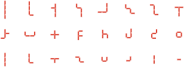
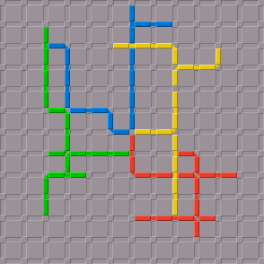

Nexos ist ein Brettspiel ähnlich wie Blokus. Das Spielbrett ist ein rechtwinkliges 13×13-Liniengitter. Jede Farbe benutzt 24 Spielsteine, die aus bis zu vier verbundenen Liniensegmenten bestehen.

Jede Farbe hat einen Startkreuzungspunkt auf der Kreuzung der dritten Linien nahe einer Ecke. Der erste Spielstein muss den Startkreuzungspunkt berühren.
Die folgenden Spielsteine müssen so auf leere Liniensegmente gesetzt werden, dass ein Segment des neuen Spielsteins einen Kreuzungspunkt berührt, den bereits ein Segment derselben Farbe berührt. Es spielt keine Rolle, ob Spielsteine anderer Farbe denselben Kreuzungspunkt berühren oder bedecken. Allerdings dürfen sich Spielsteine nicht überlappen. Die Verbindungen zwischen den Segmenten innerhalb eines Spielsteins sind so, dass zwei rechtwinklige Verbindungen verschiedener Spielsteine denselben Kreuzungspunkt bedecken können ohne sich zu überlappen, während gerade Verbindungen das nicht können.

Die Punktzahl einer Farbe ist die Anzahl der Liniensegmente auf dem Brett, die von der Farbe bedeckt sind, plus ein Bonus von 10 Punkten, wenn die Farbe alle ihre Spielsteine setzen konnte.
Wie Blokus kann Nexos von zwei Spielern gespielt werden, indem ein Spieler Rot und Blau, und der andere Spieler Gelb und Grün spielt.